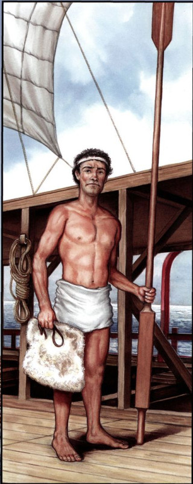
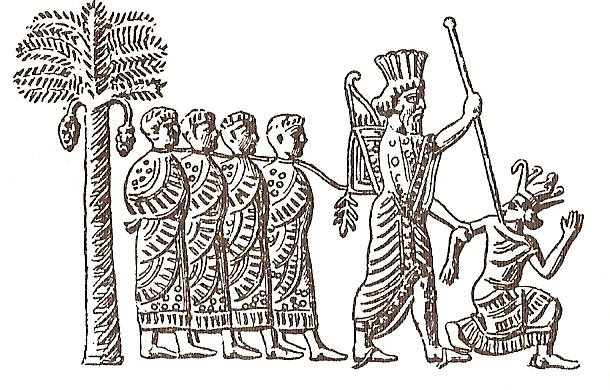

В комментариях к последним моим постам по использованию античных гребных судов в море и обслуживанию их на берегу было много сумбура и амбициозных выступлений, затмивших собой существо обсуждаемых проблем. Поэтому спокойно и во всей возможной полноте, хочу прояснить, как я понимаю эти вопросы.
Сегодняшний пост посвятим численности и качественному составу экипажа афинской триеры.

Гребец триеры. Все имущество - весло, подушка под зад и петля на уключину.
Сомнение вызвали три пункта: общее число гребцов на триере, ход триеры при работе меньшего, чем полный, комплекта гребцов, и толкование термина monokroton, сводящееся в конечном счете к вопросу об организации работы (конфигурации) гребцов на триере.
Каноническую точку зрения на вопрос о численности экипажа античной триеры и доле гребцов в ней мы приводили раньше. Обычно, приводя для числа гребцов на греческой триере цифру 170 человек, ссылаются на Геродота. Однако мы не находим у этого историка прямого указания на такое число. Его выводят, отталкиваясь от общей численности экипажа триеры.
В качестве исходных фактов приводят следующие отрывки из Геродота:
Египтяне же, потерпев поражение в той битве, обратились в беспорядочное бегство. Их оттеснили в Мемфис, и Камбис отправил туда к ним вверх по реке на митиленском корабле персидского вестника с предложением сдаться. А египтяне, завидев подходивший к Мемфису корабль, толпою бросились из города, потопили корабль, людей порубили в куски и тела их потащили в город.
Hdt. (3.13) Пер. Г. А. Стратановского
и далее
… Камбис послал затем [на казнь] сына Псамменита и 2000 его сверстников с петлей на шее и заткнутым удилами ртом. Их вели на казнь в отмщение за митиленцев, погибших с кораблем в Мемфисе. Такой приговор вынесли царские судьи: за каждого человека казнить десять знатнейших египтян.
Hdt. (3.14) Пер. Г. А. Стратановского

Персидский царь Камбис, берущий в плен фараона Псамметиха III. Изображение на персидской печати. VI в. до н. э. (Изображение из Всемирной истории Оскара Егера)
Из этих двух отрывков делается вывод, что полный экипаж триеры состоял из 200 человек:
In Herodotus (3.13.1-2), the Mytilenian ship with a crew of 200 which took part in Cambyses' invasion of Egypt (525 BC) can hardly be other than a trieres, since no other type of ship in service at the time could have had a crew of nearly that size
У Геродота митиленский корабль с экипажем в 200 человек , который принимал участие во вторжении Камбиса в Египет (525 г. до н.э.), вряд ли был другого типа, чем триера, так как никакой другой тип корабля, в составе флотов того времени, не мог иметь экипаж такой численности.
Morrison, Coates, Rankov (2000)_The Athenian Trireme, p.107
Что здесь смущает? Нет прямого указания у Геродота, что корабль был триерой. И второе – это особая миссия корабля: ему поручено было доставить посла (вестника). А это означает, что скорее всего с ним была свита, хотя бы переводчики и телохранители, которые также вошли в число изрубленных египтянами персов.
Второй фрагмент из «Истории» Геродота, на основе которого делается заключение о численности экипажа триеры (заметим, что снова персидской):
Общая численность персидских боевых сил, по моим вычислениям, была тогда вот какая: на 1207 азиатских кораблях первоначально было воинов из разных народностей 241 400, считая по 200 человек на корабль. На этих кораблях, кроме воинов из местных жителей, было еще по 30 человек персов, мидян и саков, что составляет еще 36 210 человек. К этому и к тому первому числу я прибавляю еще команды 50 весельных кораблей, принимая в среднем по 80 человек на корабль. Следовательно, на этих 50 весельных кораблях (а их было, как я уже сказал раньше, 3000) должно было находиться 240 000 человек. Таким образом, численность команды всего азиатского флота составляла 517 610 человек. Пехота же персов насчитывала 1 700 000, а конница 80000 человек. К этому следует добавить арабов на их верблюдах и ливийцев на боевых колесницах; в общем 20 000 человек. Если сосчитать вместе общее количество воинов на кораблях и в сухопутном войске, то в итоге получим 2 317 610 человек. Здесь перечислены боевые силы персов, приведенные из самой Азии, не считая следовавшего за ними обоза, грузовых судов с продовольствием и их команд.
Hdt. (7.184) Пер. Г. А. Стратановского
Здесь Геродот исходит из средней численности людей на борту кораблей персидского флота в 200 человек. Опять же впрямую не привязывая эту среднюю цифру к триерам. Средняя цифра она потому и есть средняя, что подразумевает экипажи как большей, так и меньшей численности. Хотя бы исходя из соображения, что в составе персидского флота были и войсковые транспорты (troop-carriers), и триеры для перевозки лошадей, число членов экипажей которых отличалось от численности команд линейных боевых триер. (Грузовые транспорты с продовольствием выделены Геродотом в отдельную группу). Да и если внимательно присмотреться к самому расчету Геродота, то можно увидеть, что на борту 1207 персидских кораблей было 241400+36 210 = 277610 человек, т.е. по 230 человек на корабль. Из этих 230 человек 30 были морскими пехотинцами из Персии, Мидии и Скифии. Кроме того, на каждом корабле были воины из стран, которым принадлежали эти триеры. Геродот не приводит здесь никаких цифр, но мы имеем указание в его описании битвы при Ладе (494 г. до н.э.), что на каждом, к примеру, хиосском корабле было по 40 воинов:
Среди тех, кто стойко держался в битве, самые жестокие потери понесли хиосцы. Они совершили блестящие подвиги и не захотели показать себя трусами. Хиосцы ведь, как было упомянуто выше, выставили 100 кораблей, причем на каждом из них было по 40 отборных воинов экипажа. При виде измены большинства союзников хиосцы все же сочли недостойным уподобиться этим негодяям: сражаясь вместе с немногими оставшимися союзниками, они прорвали боевую линию врагов и захватили много вражеских кораблей.11 При этом, однако, они и сами потеряли большинство своих кораблей.
Hdt. (6.15) Пер. Г. А. Стратановского
Итак, на долю собственно экипажа персидской триеры за вычетом воинов остается 160 человек. С учетом необходимого количества командного состава, а также палубных матросов, получаем, что количество гребцов становится существенно ниже 160.
Единственное указание Геродота на численность экипажа греческого корабля мы встречаем в описании битвы при Артемисии (480 г до н.э.):
В этой битве из Ксерксовых воинов отлично сражались египтяне. Они совершили много подвигов и, между прочим, захватили пять эллинских кораблей со всеми людьми. На стороне же эллинов в этот день особенно отличались афиняне и среди них Клиний, сын Алкивиада, который сражался с экипажем 200 человек на корабле, построенном на собственные средства
Hdt. (8.17) Пер. Г. А. Стратановского
Но и здесь Геродот как бы подчеркивает особые качества корабля Клиния: построен на собственные средства и с экипажем в 200 человек, что должно отличать его от серийных кораблей, построенных государством. Частная постройка корабля означала, что он не обязан был подчиняться регламенту «Декрета Фемистокла» (хотя и продолжают оставаться сомнения в соответствии текста декрета из надписи, найденной в Трезене и опубликованной в 1960 году, подлинному декрету Фемистокла 481 года). Это наше утверждение также только предположение, но оно имеет право на существование наряду с предположением Моррисона и др., которые приводят этот пример для подтверждения, что греческие корабли имели такие же экипажи, как и персидские («It seems to have been the same on the Greek side», когда приводят данные Геродота о кораблях персов).
Даже если предположить, что общая численность экипажа греческой триеры 200 человек, то для сражения на равных с персидской триерой в составе этого экипажа должно быть никак не меньше воинов, чем на корабле противника, т.е. 30-40 человек. А это опять оставляет на долю гребцов меньше 170 человек.
Существует еще один способ, с помощью которого можно оценить численность экипажа триеры. Для этого следует проанализировать размер денежных выплат, которые получали его члены. У Фукидида мы читаем
В начале следующего лета афинские послы возвратились из Сицилии вместе с послами эгестян, которые привезли с собой 60 талантов серебра в слитках — месячное жалованье для 60 кораблей, об отправке которых они должны были хлопотать.
(Thuc, VI, 8, 1)
Один талант (6000 драхм) на корабль в месяц – это 200 драхм в день. Но даже зная общую сумму – 200 драхм на корабль – мы не можем на ее основе вычислить численность экипажа, так как существовало различие в величине жалованья между отдельными его членами. Известно, что например рулевые получали больше, чем другие члены экипажа. Дополнительные деньги среди гребцов получали траниты. И солдаты на борту триер, относящиеся к сословию зевгитов, также получали больше денег, чем рядовые гребцы. Различное жалованье платили и разным категориям командного состава, к тому же известно, что они получали больше, чем рядовые гребцы. Так что средняя цифра в данном случае нам мало что дает.
Не даст точного числа гребцов и попытка вычисления его по числу весел на триере, хотя, надо признать, это наиболее весомое свидетельство. Моррисон и др. пишут
The total number of oarsmen is nowhere given, but the naval inventories give the number of oars, apart from spares, as 170. Since there is a passage in Thucydides (2.93.2) which shows conclusively that each oarsman in a trieres pulled his own oar, the total number of oarsmen must also be 170.
Общее число гребцов нигде не дано, но военно-морские инвентарные реестры дают число весел, не считая запасных, как 170. Так как у Фукидида имеется пассаж (2.93.2), показывающий, что каждый гребец триеры гребет одним веслом, общее число гребцов также должно быть 170.
Morrison, Coates, Rankov (2000)_The Athenian Trireme p.135
Мы приводили раньше текст Фукидида, на который дают ссылку авторы книги (см. гиперссылку выше в этом посте). И изображение гребца, приведенное выше, тоже подтверждает такую идею: одно весло – один гребец. Не все исследователи с этим согласны, но мы подробнее обсудим эту проблему позже. Сейчас же будем иметь в виду именно такую схему.
Отметим, что основной источник сведений по количеству весел на триерах – сохранившиеся в Пирее надписи с инвентарными списками (реестрами) – относятся к последней трети четвертого века до н.э. И число весел, приводимое в них, не строго постоянно, а меняется от доски к доске. Некоторые исследователи, начиная с Моррисона, списывают эти вариации на ошибки каменщиков, выбивавших надписи. Причем, надо отметить, что такие вариации отмечались и в более ранних реестрах. Так, в реестре IG II2, 1607 (373/2) мы имеем 50 весел транитов (строка 59) и 59 весел транитов (строка 65). В следующей надписи (1608 (373/2)) корабль "Mneme" имеет следующее число весел: у транитов – 58, зигитов – 54, и таламитов – 52, т.е. всего 164 весла, что, как видим, отличается от канонической цифры 170.
Канонические 170 весел появляются в реестрах после 358 года, когда были учреждены симмории для снаряжения афинского флота перед лицом угрозы, исходящей из Эвбеи. Для расчета средств, необходимых для постройки одного корабля на каждую симморию, и были введены стандарты, определяющие характеристики такого корабля.
Редкий случай, но я согласен с авторами Википедии, вставившими в свою статью о триере такой абзац:
Точное происхождение и устройство триеры не ясно и до сих пор обсуждается. Кроме того, схема размещения гребцов, распределение гребцов по вёслам, да и сама классификация древних гребных судов, основанная на количестве вёсел, остаются спорными. Найденные изображения кораблей на скульптурных рельефах и фрагментах керамики немногочисленны и в большинстве своём очень схематичны и стилизованы. Литературные источники случайны и хаотичны, и по ним довольно сложно судить о деталях устройства древних судов. Также нужно учесть, что существуют вполне ясные и точные толкования античных текстов, принадлежащие более поздним авторам, которые мало разбирались в технической стороне вопроса и по-своему интерпретировали древних авторов
Википедия
Продолжим обсуждение в следующий раз.